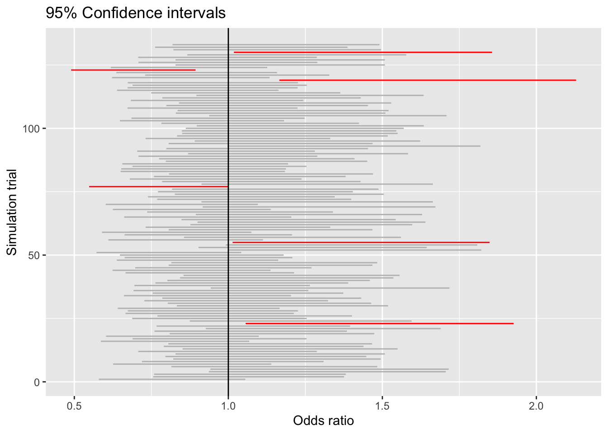
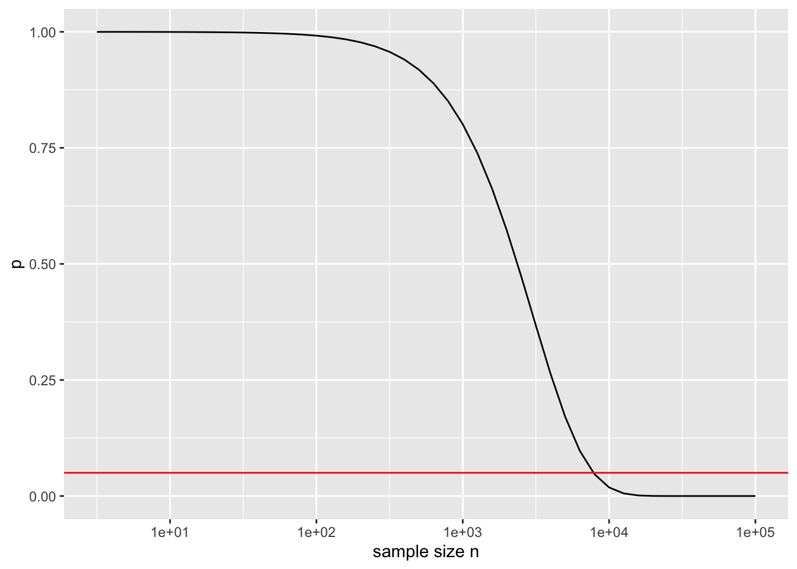

38 False discovery
\[\newcommand{\Ptest}{\mathbb{P}} \newcommand{\Ntest}{\mathbb{N}} \newcommand{\given}{\ |\!\!|\ }\]
Avoid bad habits
NEEDS RE-ORGANIZATION
Sometimes the interest is more general: Do any of these terms contribute to explaining variation in the response variable? In such situations, the appropriate p-value is one that compares one model to another. This style of p-value—not on the individual coefficients but on model terms—comes from a calculation called “analysis of variance.”
Nobody likes to summarize their work with the word “fail.” And so, when “fail to reject the Null hypothesis” is the correct conclusion, people express this in softer ways.
It’s very common for the conclusion “fail to reject the Null” simply not to be reported at all. Historically, and even today, some journals will not accept for publication a scientific article with the conclusion “fail to reject the Null.”
Consider the situation of a researcher whose years-long project has led to a p-value of 0.07. To soften the blow of “fail to reject,” the researcher will report the p-value itself so that the reader can see how close it is to small. In some literatures, you will see language like “tending to significance” instead of “fail to reject.” In some fields, research publications will show the notation \(p < 0.1\). This also indicates failure to reject the null hypothesis.
Journalists eager to publish reports about scientific work, but facing a p-value that is a little too large, will occasionally qualify their report with this phrase: “… although the work did not reach the rigorous scientific standard for statistical significance.”
All of these are dodges. There’s nothing “rigorous” about \(p < 0.05\) although seems unfair that a researcher who had a plausible idea and did the work to test it honestly does not get to publish that work and receive acknowledgement that they are a hard-working part of the overall scientific enterprise.
Another problem with p-values stems from misinterpretation of the admittedly difficult logic that underlies them. The misinterpretations are encouraged by the use of the term “tests of significance” to the p-value method. Particularly galling is the use of the description “statistically significant” to describe a result where p < 0.05. The everyday meaning of “significant” as something of importance is in no way justified by p < 0.05. Instead, the practical importance or not is more clearly signaled by examining an effect size. (It’s extremely disappointing that journalists, who are writing for an audience that for the most part has no understanding of p-value methodology, use “significant” when reporting on the statistics of research findings. It would be more honest to use a neutral term such as “null-validated” or “p-validated” which does not confuse the statistical result with actual practical importance.)
This example of a regression table shows that p-values can sometimes be very, very small. Such smallness is often mis-interpreted as indicating that a very powerful result has been found. This is simply nonsense, which is why the more dignified notation \(p < 0.05\) or * is to be preferred.
In the regression summary of the height ~ mother model, the p-value on the mother coefficient was reported as 1.079105e-09. This is a symptom of the choice by software designers to report more digits than are genuinely useful.
Statistician Jeffrey Witmer, in an editorial in the Journal of Statistics Education, distinguishes between the “mathematical” information in a p-value and the “statistical” information. Mathematically, the p-value is the result of a calculation. Statistically, the p-value is used as a symbol to indicate whether the Null hypothesis is a plausible explanation for a statistical result.
Witmer proposes a simple rule for printing p-values: Round to 1 significant digit. This means that a p-value computed to be 0.382 would be reported as 0.4. A p-value of 0.0079 would be reported as 0.008. The justification for this rule is that there is no information in the second non-zero digit of a p-value that can meaningfully guide a conclusion about whether the Null hypothesis is a plausible explanation for a statistical result. There may be a mathematical difference between 0.0079 and 0.008, but there is no meaningful statistical difference.
Witmer also offers a simple solution to the problem of people misinterpreting “statistically significant” as related to the everyday meaning of “significant.” Replace the term “statistically significant” with “statistically discernible.” There is no difference between the everyday sense of “discernible”—able to be perceived—and the statistical implications. In conveying statistical information, “discernible” is more descriptive than “significant.” For example, it would be appropriate to describe the implications of a p-value \(p < 0.03\) as, “the relationship is barely discernible from the sampling variation.”
NHT applied to an effect size is intended to demonstrate whether the effect size is sufficiently far from zero that we can reasonably conclude that it is non-zero. There is a simpler way to do this: look at the confidence interval on the effect size.
But, for those journals that (unwisely) require p-values, you’ll have to use NHT to generate them.
Since “fail” and “reject” are unattractive words, in practice other expressions are used. One of the notations is \(p < 0.05\), another is to put a asterisk (\(^\star\)) next to the value of the effect size or R2. Both of these correspond to “reject the Null.” The notation used for “fail to reject” is to put nothing next to the effect size or R2, but it would be more appropriate simply to list the effect size as “n.s.” to stand for “not significant.”
Mention the idea of power and why it’s helpful to look at power when interpreting a “failure to reject.”
There is, I think, a helpful analogy to be made between hypothesis testing and the familiar ways that we try to avoid information overload on the Internet.
“Internet protocols” organize communication into standard format “packets” that are easily and rapidly transmitted, routed, and received. These packets make possible the vast web of connections that is the Internet. Anyone can put any digital content they like inside a packets; the protocols are neutral in this regard. The Internet protocols were not designed to determine what content is worth transmitting and what is worth receiving. We rely on other systems for that, mostly at the receiving end. There are spam filters to avoid email accounts being flooded with worthless or harmful messages. There are recommender systems that compare your history of music or movie streaming to that of others in order to identify what new content you might like. Search engines look inside web pages to identify connections and rank highly those pages that are linked to by other highly ranked pages. These systems leave creators free to follow their interests, ideas, and imaginations, while providing a little guidance to people who want to access some content but avoid being overcrowded by other content that is not worthwhile.
Historically, there were earlier waves of technology that increased the ability to communicate. Printing and postal systems emerged in the 13th and following systems. Before those innovations, communication was outrageously expensive, requiring hand-copying of manuscripts, couriers, and camel trains. Content was controlled to some extent by authorities: government censorship; church “indices” and spritual authorities; and often the authorities of those famous classical philosophers and poets whose work and thought was promulgated by early universities.
About four centuries ago, such authorities were being challenged. It slowly became accepted to make judgements based on observations and to disregard antique authorities. Enlightened “scientists” communicated their discoveries in hand-written letters to one another.1 In the late 1600s, another, possibly more efficient means of communication was developed: scientific societies where members met and read aloud their work to an audience, and the journals of such societies which enabled mass communication to those scientists distant from the society’s meetings in time or space.
Early scientific journals are delightful collations on diverse and miscellaneous subjects. Everything seems to have been of interest to everyone. Publication was regulated by the recommendations of “members” of the society; new members were admitted by the consensus of earlier members.
Over the centuries, the growth of scientific content and the specialization of methodology called for research findings to be sorted by area. But there was still need to regulate publication, to avoid distracting readers with worthless information.
Hand-in-hand with the scientific revolution’s reliance on observation and data rather than authority came the need to standardize methods for summarizing data. This might be called a “statistical protocol” by analogy to Internet protocols, but there is no wise governing body, only consensus and “accepted practice.”
The data from a bench-top experiment might consist of, say, six numbers: three from the treatment and three from controls. The arithmetic means of these two groups is practically certain to be non-zero, even if the the treatment had no effect. This meant that a means was needed to establish when the difference in means was large enough to suggest the two groups might be genuinely different and that the treatment did have an effect. The statistical protocol to decide such things needed to be simple: computers weren’t available and there were no courses to teach statistical method until the 1960s. In the 1930s, prominent statistical pioneer Ronald Fisher published a slim volume, Statistical Methods for Research Workers which laid out methods for managing and standardizing the calculations. Fisher’s authority was substantial but not absolute. Differing philosophical views also came to influence “accepted practice.”
Early statistics books and courses codified “accepted practice.” What emerged is the system of calculations that we call “hypothesis testing” and the ubiquitous p-value. Still, this was rooted in the need to avoid journals wasting library-shelf-space and reader time with experiments that produced arithmetic differences between groups that were accidental and not genuinely “significant.’
The now-codified accepted practice was in many ways similar to the protocols used by search engines and social media to direct our eyes and ears to content that might, possibly, be worthwhile. These systems are far from perfect, sometimes hiding good content or promoting worthless content. And, of course, the worth of content is a matter of personal interests and values, something that computer algorithms can mimic only imperfectly.
“Hypothesis testing” is an ad hoc set of not always consistent concepts cobbled together by a unorganized community of independent researchers, steered perhaps by the perceived authority of one statistical celebrity or another. It is not a mathematically derived, highly optimized calculation of objective worth, just a simple means to deal with the fact that arithmetic differences are influenced by sampling variation and noise, and that a detected difference might not reliably point to a genuine difference between groups.
It is simply not possible to understand hypothesis testing in the same way you can understand differentiation or data wrangling.
Hypothesis testing emerged in an era of bench-top and agricultural experiments conducted by a small community of self-identified scientists working without central control. It might have been a practicable solution to the problem of information overload in that era of small data. But the protocol has been frozen in place by textbooks; each generation passing it along to the next as received wisdom, in much the same way as the views of classical philosophers and poets were passed down to later generations as authoritative and unchallengeable.
So lets step back from this frozen statistical protocol of hypothesis testing and point out inconsistencies and peculiarities that make it hard to make sense of and perhaps unsuited to the needs of handling information overload in todays world of big data and huge scientific enterprise.
p-value is an inseparable tangle of the amount of data available and the effect size. With enough data, practically everything has a small p-value.
Hundreds of thousands (perhaps millions) of scientists churning out research results. A filter that eliminates 95% of the nonsense still lets through an unfathomable mass of content.
So many choices in research and analysis methods—which covariates to include, whether to exclude an inconvenient point as an outlier, multiple choices for the response variable, all combined with a professional priority to “publish or perish.”
False discovery
SIMPLIFY THIS. Make a DAG with hundreds of explanatory variables, none of which is connected to the response variable.
Sources of false discovery
[NEEDS STREAMLINING and take out references to examples like Potomac/Austin]
How did the coupon classifier system identify so many accidental patterns, patterns that existed in the training data but not in the testing data?
One source of false discovery stems from having multiple potential response variables. In the Potomac/Austin example, there were ten different classifiers at work, one for each of the ten Austin products. Even if the probability of finding an accidental pattern in one classifier is small, looking in ten different places dramatically increases the odds of finding something.
Similarly, having a large number of explanatory variables – we had 100 in the coupon classifier – provides many opportunities for false discovery. The probability of an accidental pattern between one outcome and one explanatory variable is small, but with many explanatory variables each being considered it’s much more likely to find something.
A third source of false discovery at work in the coupon classifier relates to the family of models selected to implement the classifier. We used a tree model classifier capable of searching through the (many) explanatory variables to find ones that are associated with the response outcome. Unbridled, the tree model is capable of very fine stratification. Each coupon classifiers stratified the customers into about 200 levels. On average, then, there were about 50 customers in each strata. But there is variation, so many of the strata are much smaller, with ten or fewer customers. The small groups were constructed by the tree-building algorithm to have similar outcomes among the members, so it’s not surprising to see a very strong pattern in each group. For each classifier, about 15% of all customers fall into a strata with 20 or fewer customers.
Identifying false discovery
We use data to build statistical models and systems such as the coupon-assignment machine. False discovery occurs when a pattern or model performance seen with one set of data does not generalize to other potential data sets.
The basic technique to avoid false discovery is called cross validation. One simple approach to cross validation splits the data frame into two randomly selected non-overlapping sets of rows: one for training and the other for testing. Use the training data to build the system. Use the testing data to evaluate the system’s performance.
Most often, cross validation is used to test model prediction performance such as the root-mean-square error or the sensitivity and specificity of a classifier. This can be accomplished by taking the trained model and providing as input the explanatory variables from the testing data, then comparing the model output to the actual response variable values in the testing data. Note that using testing data in this way does not involve retraining the model on the testing data.
How big should the training set be compared to the testing set? For now, we’ll keep things simple and encourage use of a 50:50 split or something very close to that.
This is a simple and reliable approach that should always be used.
False discovery and multiple testing
When the main interest is in an effect size, standard procedure calls for calculating a confidence interval on the effect. For example, a 2008 study examined the possible relationship between a woman’s diet before conception and the sex of the conceived child. The popular press was particularly taken by this result from the study:
Women producing male infants consumed more breakfast cereal than those with female infants. The odds ratio for a male infant was 1.87 (95% CI 1.31, 2.65) for women who consumed at least one bowl of breakfast cereal daily compared with those who ate less than or equal to one bowlful per week. (fetal-sex-2008?)
The model here is a classifier of the sex of the baby based on the amount of breakfast cereal eaten. The effect size tells the change in the odds of a male when the explanatory variable changes from one bowlful of cereal per week to one bowl per day (or more). This effect size is sensibly reported as a ratio of the two odds. A ratio bigger than one means that boys are more likely outcomes for the one-bowl-a-day potential mother than the one-bowl-a-week potential mother. The 95% confidence interval is given as 1.31 to 2.65. This confidence interval does not contain 1. In a conventional interpretation, this provides compelling evidence that the relationship between cereal consumption and sex is not a false pattern.
But the confidence interval is not the complete story. The authors are clear in stating their methodology: “Data of the 133 food items from our food frequency questionnaire were analysed, and we also performed additional analyses using broader food groups.” In other words, the authors had available more than 133 potential explanatory variables. For each of these explanatory variables, the study’s authors constructed a confidence interval on the odds ratio. Most of the confidence intervals included 1, providing no compelling evidence of a relationship between that food item and the sex of the conceived child. As it happens, breakfast cereal produced the confidence interval that was the most distant from an odds ratio of 1.
Let’s look at the range of confidence intervals that can be found from studying 100 potential random variables that are each unrelated to the response variable. We’ll simulate a response randomly generated “sex” G and B where the odds of G is 1. Similarly, each explanatory variable will be a randomly generated “consumption” high or low where the odds of high is 1. A simple stratification of sex by consumption will generate the odds of G for those cases with consumption Y and also the odds of G for those cases with consumption N. Taking the ratio of these odds gives, naturally enough, the odds ratio. We can also calculate from the stratified data a 95% confidence interval on the odds ratio.
So that the results will be somewhat comparable to the results in (fetal-sex-2008?), we’ll use a similar sample size, that is, n = 740. Table @ref(tab:sex-consumption-1) shows one trial of the simulation.
| high | low | |
|---|---|---|
| B | 165 | 182 |
| G | 211 | 182 |
(ref:sex-consumption-1-cap) A stratification of sex outcome (B or G) on consumption (high or low) for one trial of the simulation described in the text.
Referring to Table @ref(tab:sex-consumption-1), you can see that the odds of G when consumption is low is 182 / 182 = 1. The odds of G when consumption is high is 211/165 = 1.28. The 95% confidence interval on the odds ratio can be calculated. It is 0.95 to 1.73. Since that includes 1, the data underlying Table @ref(tab:sex-consumption-1) provide little or no evidence for a relationship between sex and consumption. This is exactly what we expect, since the simulation involves entirely random data.
Figure 38.1 shows the 95% confidence interval on the odds ratio for 133 trials like that in Table @ref(tab:sex-consumption-1). The confidence interval from each trial is shown as a horizontal line. The large majority of them include 1. That’s to be expected because the data have been generated so that sex and consumption have no relationship except those arising by chance.
Warning: geom_vline(): Ignoring `mapping` because `xintercept` was provided.
Nonetheless, out of 133 simulations there are six where the confidence interval does not include 1. These are shown in red. By necessity, one of the intervals will be the most extreme. If instead of numbering the simulations, we had labelled them with food items – e.g. grapefruit, breakfast cereal, toast – we would have a situation very similar to what seems to have happened in the sex-vs-food study. (For a more detailed analysis of the impact of multiple testing in (fetal-sex-2008?), see (young-2009?).)
Suppose now that half of the data used in (fetal-sex-2008?) had been held back as testing data. Using the training data, it would be an entirely legitimate practice to generate hypotheses about which specific food items might be related to the sex of the baby. The validity of any one selected hypothesis could then be established using the testing data without the ambiguity introduced by multiple testing. The testing data confidence interval can be taken at face value; the training data confidence interval cannot.
Example: Organic discovery?
It’s easy to find organic foods in many large grocery stores. Advocates of an organic diet are attracted by a view that it is sustainable, promotes small farms, and helps avoid contact with pesticides. There are also nay-sayers who make valid points, but that is not our purpose here. Informally, I find that many people and news reports point to the health benefits of an organic diet. Usually they believe that these benefits are an established fact.
A 2018 New York Times article observed:
People who buy organic food are usually convinced it’s better for their health, and they’re willing to pay dearly for it. But until now, evidence of the benefits of eating organic has been lacking. (NYT-2018-10-23-Rabin?)
The new evidence of health benefits is reported in an article in the Journal of the American Medical Association: Internal Medicine (baudry-2018?)
Describing the findings of the research, the Times article continued:
Even after these adjustments [for covariates], the most frequent consumers of organic food had 76 percent fewer lymphomas, with 86 percent fewer non-Hodgkin’s lymphomas, and a 34 percent reduction in breast cancers that develop after menopause.
The study warrants being taken seriously: it involved about 70,000 French adults among whom 1340 cancers were noted. The summary of organic foot consumption was a scale from 0 to 32 and included 16 labeled products including dairy, meat and fish, eggs, coffee and tea, wine, vegetable oils, and sweets such as chocolate. Adjustment was made for a substantial number of covariates: age, sex, educational level, marital status, income, physical activity, smoking, alcohol intake, family history of cancer, body mass index, hormonal treatment for menopause, and others.
Yet … the research displays many of the features that can lead to false discovery. For instance, results were reported for four different types of cancer: breast, prostate, skin, lymphomas. The study reports p-values and hazard ratios2 comparing cancer rates among the four quartiles of the organic consumption index.
Comparing the most organic (average organic index 19.36/32) and the least organic (average index 0.72/32) groups, the 95% confidence interval on the relative risk and p-values given in the study’s Table 4 are:
- Breast cancer: 0.66 - 1.16 (p = 0.38)
- Prostate cancer: 0.61- 1.73 (p = 0.39)
- Skin cancer: 0.49 - 1.28 (p = 0.11)
- Lymphomas: 0.07 - 0.69 (p = 0.05)
You might be surprised to see that the confidence interval on the relative risk for breast cancer includes 1.0, which suggests no evidence for an effect. As clearly stated in the report, the risk reduction for breast cancer is seen only in a subgroup of study participants: those who are postmenopausal. And even then, the confidence intervals continue to include 1.0:
- Breast cancer pre-menopausal: 0.67 - 1.52 (p = 0.85)
- Breast cancer post-menopausal: 0.53 - 1.18 (p = 0.18)
So where is the claimed 34% reduction in breast cancer cited in the New York Times article. It turns out the the study used two different indices of organic food consumption. The 0 to 32 scale which includes many items for which the amount consumed is very small (e.g., coffee, chocolate) and a “simplified, plant derived organic food score.” It’s only when you look at the full 0 to 32 scale that you see the reduction in post-menopausal breast cancer: the confidence interval is 0.45 to 0.96 (p = 0.03).
What about cancer rates overall? For the 0 to 32 scale the risk ratio was 0.58 - 1.01 (p = 0.10). To see the claimed reduction clearly you need to look at the simplified food score which gives 0.63 - 0.89 (p < 0.005). And it’s only in comparing the highest-index quarter of participants with the low
Warning: geom_hline(): Ignoring `mapping` because `yintercept` was provided.
NOTES IN DRAFT
“Statistical crisis” in science
https://www.americanscientist.org/article/the-statistical-crisis-in-science
Garden of the Forking Paths
Ionedes
The word “science” comes from the Latin for “to know.” But a dictionary definition of “science” makes clear the “scientific” style for gaining knowledge: “The systematic study of the structure and behavior of the physical and natural world through observation, experimentation, and the testing of theories against the evidence obtained.” (Source: Oxford Languages)↩︎
Hazard ratios are analogous to risk ratios.↩︎